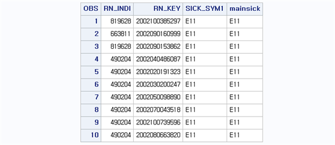
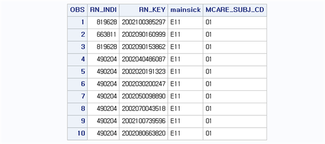
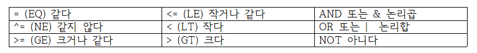
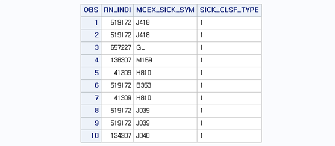
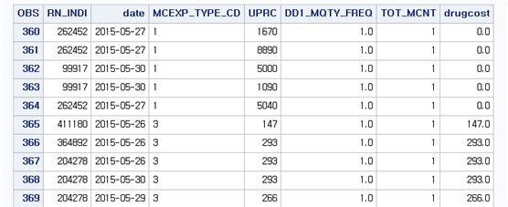
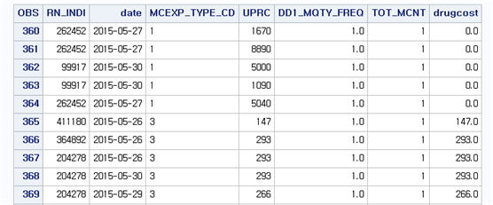
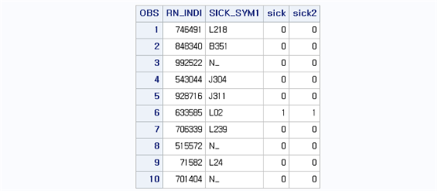
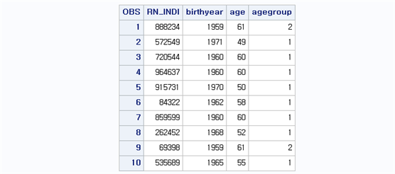
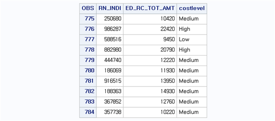
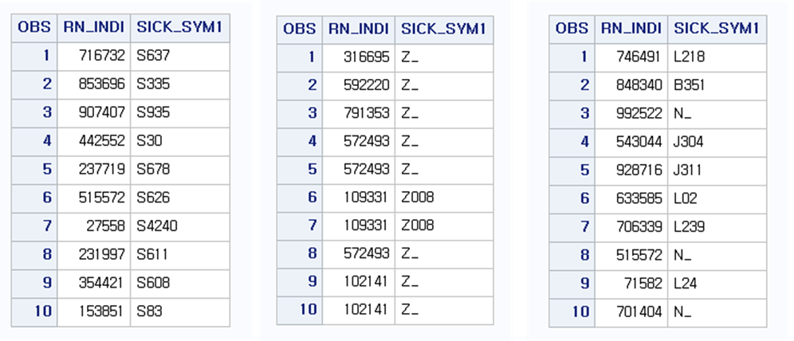

Chapter 5 조건문
5.1 특정 조건을 만족하는 관찰값 선택하기
SAS DATA step에서 특정 조건을 만족하는 개체만 선택하거나, 특정 조건을 만족하는 경우 변수의 값을 변경하는 등의 명령을 수행하기 위해서 조건문을 담당하는 IF 문을 사용한다. IF 문은 [IF 조건;], [IF 조건 THEN 명령문;], [IF 조건 THEN 명령문; ELSE 명령문;] 등과 같이 여러 가지 형태로 사용할 수 있으며, 먼저 특정 조건을 만족하는 개체를 선택해서 새로운 데이터셋을 구성하는 IF 문에 대해서 알아보자. 사용 방법은 다음과 같다.
IF 조건문1 AND/OR 조건문2 ...;하나 이상의 조건문을 나열할 수 있으며, 나열된 조건을 만족하는 개체들만으로 새로운 데이터셋을 구성한다. 이때 IF 문은 개체의 선택에만 관여한다.
BB.T20 데이터셋에서 주상병(SICK_SYM1) 코드를 첫 세자리만 추출하여 주상병이 제2형 당뇨(‘E11’)인 명세서만 추출하여 BB.T20_IF 데이터셋을 생성해보자. 프로그램은 다음과 같다.
data bb.t20_if; set bb.t20;
mainsick=substr(sick_sym1,1,3);
if mainsick='E11'; run;
proc print data=bb.t20_if (obs=10); var rn_indi rn_key sick_sym1 mainsick;
format rn_key 15.; run;여기서 IF 다음에 나오는 “MAINSICK=’E11’”이 조건식이며, 3자리 코드로 이루어진 주상병이 ‘E11’인 개체를 의미한다. 이때 변수가 가지는 값이 문자형일 때는 값을 입력할 때 반드시 ‘ ’를 이용하여 입력해야 한다.

결과를 살펴보면 총 135,524개의 명세서 중에서 ‘E11’을 주상병으로 갖는 명세서는 2,708개가 선택되어 BB.T20_IF 데이터셋이 구성된다. 조건을 조금 더 확장하여 주상병이 제2형 당뇨(‘E11’)이면서 동시에 내과 진료과목이 기재된 명세서만 추출하여 BB.T20_IF2 데이터셋을 구성해보자. 이때 진료과목코드(MCARE_SUBJ_CD)의 값이 ‘01’인 경우 내과를 의미하며 이를 위한 프로그램은 다음과 같다.
data bb.t20_if2;
set bb.t20;
mainsick=substr(sick_sym1,1,3);
if mainsick='E11' and mcare_subj_cd='01';
run;
proc print data=bb.t20_if2 (obs=10);
var rn_indi rn_key sick_sym1 mainsick;
format rn_key 15.;
run;여기서 IF 다음에 나오는 “MAINSICK=’E11’”과 “MCARE_SUBJ_CD=’01’”이 조건식이며, 두 조건이 동시에 일어나야 하므로 “AND”로 연결하였다. 진료과목코드(MCARE_SUBJ_CD)는 숫자 값으로 이루어져 있지만 SAS에서는 문자형 변수로 인식하고 있기 때문에 값을 입력할 때 ‘ ’를 이용하여 값을 줘야 한다.

결과를 살펴보면 총 135,524개의 명세서 중에서 ‘E11’이 주상병이면서 진료과목코드 내과인 명세서는 2,174개가 선택되어 BB.T20_IF2 데이터셋이 구성된다.
조건문에서 사용되는 조건 연산자와 논리 연산자는 다음과 같다.

A가 B보다 크다를 표현할 때 “A > B” 또는 “A GT B”로 표현해도 무방하다.
5.2 특정 조건을 만족하는 관찰값 삭제하기
특정 조건을 만족하는 개체에 대해서 명령문을 실행하는 방법은 “IF 조건 THEN 명령문” 형태로 사용하는 것이다. 이번 장에서는 특정 조건을 만족하는 개체를 남기는 방법과 반대로 특정 조건에 해당하는 개체를 삭제하는 방법을 살펴보자. 사용 방법은 다음과 같다.
IF 조건문1 AND/OR 조건문2 ... THEN DELETE;BB.T40 데이터셋에서 상병분류구분코드(SICK_CLSF_TYPE)를 이용하여 주상병(‘1’)만 남기고 부상병(‘2’) 및 배제된 상병(‘3) 그리고 결측값을 가진 개체를 제거한 다음 BB.T40_DELETE 데이터셋에 저장해보자.
data bb.t40_delete;
set bb.t40;
if sick_clsf_type='' or sick_clsf_type='2' or sick_clsf_type='3' then delete;
run;
proc print data=bb.t40_delete (obs=10);
var rn_indi mcex_sick_sym sick_clsf_type;
run;문자형 변수의 결측값을 표기할 때는 ’ ‘로 두면 되고, 숫자형 변수의 결측값은 “.”으로 표기한다. 조건이 여러 개의 값을 가져야 하므로 OR로 조건을 묶어 표시하였다. 이처럼 하나의 변수가 여러 개의 값을 가질 수 있는 조건에서는 IN 명령문을 이용하여 좀 더 편하게 조건을 줄 수 있다. 다음과 같은 명령문을 이용해도 위와 같은 결과를 보여준다.
data bb.t40_delete;
set bb.t40;
if sick_clsf_type in ('' '2' '3') then delete;
run;
결과를 살펴보면 BB.T40의 개체수는 340,596개로 이 중 상병분류구분코드(SICK_CLSF_TYPE) 값이 ’1‘인 101,561개의 개체값을 남기고 모두 삭제되었다는 것을 알 수 있다.
개체를 남기거나 삭제하는 문제는 서로 반대되는 역할을 하므로 상황에 따라 편한 구문을 선택하면 된다. 예를 들어 위의 예제의 경우, 상병분류구분코드(SICK_CLSF_TYPE) 값은 ’1‘, ’2‘, ’3‘, 그리고 결측값이 전부이므로 ’2‘, ’3‘, 결측값을 지우는 문제는 ’1‘을 제외한 나머지를 지우거나, 반대로 ’1‘인 값만 선택하는 문제와 같다. 따라서 아래의 두 구문 중 어느 구문을 사용해도 위와 같은 결과를 보여준다.
IF SICK_CLSF_TYPE ^= ‘1’ THEN DELETE;
또는
IF SICK_CLSF_TYPE = ‘1’;5.3 조건문 활용하기
IF ~ THEN DELETE 명령문은 IF ~ THEN 실행문의 특수한 형태이다. 이번 장에서는 일반적인 형태의 IF ~ THEN 문을 살펴보자. 사용 방법은 다음과 같다.
IF 조건문1 AND/OR 조건문2 ... THEN 실행문;여기서 여러 연산자가 혼합해서 사용되는 경우에 연산 순서는 괄호( ) ⇨ 산술연산자 ⇨ 비교연산자 ⇨ 논리 연산자 순으로 인식되며, 같은 연산자 내에서는 먼저 지정된 연산부터 실행한다. 다음과 같은 프로그램을 살펴보자.
data bb.t30_ifthen;
set bb.t30;
date = input(mdcare_strt_dt, yymmdd8.);
if mdy(5,25,2015) <= date le mdy(5,30,2015) and mcexp_type_cd in ('1' '3');
if mcexp_type_cd in ('3') then drugcost=uprc*dd1_mqty_freq*tot_mcnt;
if drugcost=. then drugcost=0;
run;
proc print data=bb.t30_ifthen (firstobs=360);
var rn_indi date mcexp_type_cd uprc dd1_mqty_freq tot_mcnt drugcost;
format date yymmdd10.;
run;위의 프로그램은 BB.T30 데이터셋으로부터 요양개시일자(MDCARE_STRT_DT)를 날짜 변수 DATE로 만들고 요양개시일자가 2015년 5월 25일부터 2015년 5월 30일까지이면서 동시에 진료비구분코드(MCEXP_TYPE_CD)가 기본진료료(’1‘) 또는 약품비(’3‘)인 개체만 남겨서 BB.T30_IFTHEN 데이터셋을 구성한다. 이때 진료비구분코드(MCEXP_TYPE_CD)가 약품비(’3’)라면, DRUGCOST 변수를 생성하라는 조건문이 사용되었으며 DRUGCOST는 단가(UPRC)1일투여량 또는 횟수(DD1_MQTY_FREQ)총투여일수 또는 실시횟수(TOT_MCNT) 형태로 산출된다. DRUGCOST는 조건이 진료비구분코드(MCEXP_TYPE_CD)가 약품비(’3’) 일 때만 산출되므로 약품비(‘3’)가 아닌 다른 진료비구분코드가 있다면(여기서는 기본진료료(‘1’)) 결측값으로 결과가 나타난다. DRUGCOST는 수치형 변수로 생성되기 때문에 결측값은 “.”으로 인식되며, 따라서 마지막 조건문은 DRUGCOST가 결측값을 가지고 있다면 0으로 대체하라는 명령문이다.

결과를 살펴보면 요양개시일자(MDCARE_STRT_DT)가 2015년 5월 25일부터 2015년 5월 30일 사이에 있으면서 진료비구분코드(MCEXP_TYPE_CD)가 기본진료료(’1‘) 또는 약품비(’3‘)인 개체만 남아있으며, 진료비구분코드가 약품비인 경우에 DRUGCOST 값이 존재하고 기본진료료인 경우에는 DRUGCOST가 0인 것을 알 수 있다.
5.4 조건문 확장하기
IF ~ THEN 문은 조건이 참일 때 명령문을 실행하는 조건문이다. 즉, 조건이 참일 때만 시행하고 그 외의 조건에 대해서는 시행을 하지 않기 때문에 결측값으로 결과를 내어준다. 따라서 그 외에 조건에 대해서도 특정 명령문을 시행하게 하려면 새로운 IF ~ THEN 문을 시행해야 한다. 만약 조건이 참인 경우와 그 외의 경우로 나누어질 때 IF ~ THEN ~; ELSE ~ 구문으로 쉽게 사용 가능하며, 이러한 형태는 앞으로 이어질 여러 조건에서 사용되는 조건문의 기본 형태가 된다. IF ~ THEN ~; ELSE ~ 구문의 사용법의 다음과 같다.
IF 조건문1 AND/OR 조건문2 ... THEN 실행문1;
ELSE 실행문2;여기서 ELSE 다음의 실행문2는 IF 다음의 “조건문1 AND/OR 조건문2 …”이 거짓인 경우에 시행된다. 즉, “조건문1 AND/OR 조건문2 …”을 만족하는 개체 이외의 나머지 모든 개채에 한해서 실행문2가 시행된다.
위의 IF ~ THEN 문의 예제를 다시 살펴보자. 위의 예제 프로그램에서 진료비구분코드(MCEXP_TYPE_CD)가 약품비(’3’)라면, DRUGCOST 변수를 생성하라는 조건문이 사용되었으며 조건을 만족하지 않는 개체는 DRUGCOST가 결측값으로 생성된다. 따라서 결측값을 0으로 대체하기 위해 새로운 IF ~ THEN 문을 지정하였다. 여기서는 이러한 두 단계의 IF ~ THEN 문을 IF ~ THEN ~; ELSE ~; 문을 이용하여 만들어 본다. 프로그램은 다음과 같다.
data bb.t30_ifthenelse;
set bb.t30;
date = input(mdcare_strt_dt, yymmdd8.);
if mdy(5,25,2015) <= date le mdy(5,30,2015) and mcexp_type_cd in ('1' '3');
if mcexp_type_cd in ('3') then drugcost=uprc*dd1_mqty_freq*tot_mcnt;
else drugcost=0;
run;
proc print data=bb.t30_ifthenelse (firstobs=360);
var rn_indi date mcexp_type_cd uprc dd1_mqty_freq tot_mcnt drugcost;
format date yymmdd10.;
run;
IF ~ THEN ~; ELSE ~ 구문은 모든 개체를 두 개의 서로 보완적인 조건으로 모든 개체를 나누어서 명령문을 시행하기 때문에 성공(=“1”)과 실패(=“0”)의 개념을 지닌 변수를 생성할 때 유용하다. 즉, 특정 조건을 만족하면 1의 값을 갖고 조건을 만족하지 않으면 0의 값을 갖는 형태의 새로운 변수를 생성할 때 사용하기 좋다. BB.T20 데이터셋에서 주상병(SICK_SYM1) 코드 3자리 값이 ‘L02’ 이면 1, 아니면 0의 값을 갖는 새로운 변수 SICK을 생성하여 BB.T20_IFELSE에 저장해보자. 프로그램은 다음과 같다.
data bb.t20_ifelse; set bb.t20;
if substr(sick_sym1,1,3)='L02' then sick=1; else sick=0;
sick2=(substr(sick_sym1,1,3)='L02');
run;
proc print data=bb.t20_ifelse (obs=10); var rn_indi sick_sym1 sick sick2;
run;
결과를 살펴보면 주상병(SICK_SYM1)의 3자리 값이 ‘L02’인 개체는 SICK 변수가 1의 값을 가지고 나머지 다른 개체는 0의 값을 가진 것을 알 수 있다. 이처럼 간단하게 두 조건으로 ‘0,’ ‘1’ 값을 생성시키는 경우에 SAS에서는 다음과 같은 방법으로 시행할 수 있다.
새로운 변수 = (기존 변수 = 값);위의 예제에서 SICK2 변수는 주상병(SICK_SYM1)의 3자리 값이 ‘L02’ 이면 1, 아니면 0의 값을 가지는 것과 같은 결과를 보여준다.
5.5 조건문 일반화하기
일반적으로 전체 개체가 여러 조건으로 쪼개어져서 명령문을 실행해야 하는 경우 IF 문과 ELSE 문을 중첩하여 조건과 명령문을 지정한다. 사용 방법은 다음과 같다.
IF 조건문1 THEN 실행문1;
ELSE IF 조건문2 THEN 실행문2;
ELSE IF 조건문3 THEN 실행문3;
...
ELSE IF 조건문p THEN 실행문p;
ELSE 실행문(p+1);이와 같은 경우 조건문1이 참인 경우 실행문1을 시행하고, 조건문1이 참인 개체를 제외하고 나머지 중에서 조건문2가 참인 경우 실행문2를 시행한다. 마찬가지로 조건문1과 2가 참인 경우를 제외한 개체중에서 조건문3이 참인 경우 실행문3을 시행하고 이와 같은 과정을 계속 반복한다. 마지막으로 앞의 모든 조건문이 참인 경우를 제외한 나머지 개체에 대해서 실행문(p+1)을 시행한다. 이와 같은 형태는 세분화된 조건에 따라 새로운 변수를 생성하는 것뿐만 아니라 그룹(group) 변수를 생성할 때도 유용하게 쓰인다.
BB.DEATH 데이터셋으로부터 2020년을 기준으로 나이 변수(AGE)를 생성하고, 나이를 기준으로 다음과 같이 그룹화하여 AGEGROUP 변수를 생성한다고 가정해보자.
| AGE | AGEGROUP |
|---|---|
| AGE \(\le\) 60 | 1 |
| 61 \(\le\) AGE \(\le\) 70 | 2 |
| 71 \(\le\) AGE \(\le\) 80 | 3 |
| AGE \(\ge\) 80 | 4 |
여기서 나이가 60세 이하인 사람들은 AGEGROUP 값이 1로 할당된다. 이때 AGE 값이 결측이라면(특히 수치형 변수에서 결측값은 가장 작은 값으로 판단하기 때문에), 60세 이하에는 결측값도 포함되므로 결측값 처리는 따로 해주는 것이 좋다. AGEGROUP 변수 생성을 위한 프로그램은 다음과 같다.
data bb.death_age;
set bb.death;
birthyear=substr(bth_yyyy,1,4)*1;
age=2020-birthyear;
if age le 60 then agegroup=1; 혹은 if age <= 60 then agegroup=1
else if age le 70 then agegroup=2; 혹은 else if age <= 70 then agegroup=2;
else if age le 80 then agegroup=3; 혹은 else if age <= 80 then agegroup=3;
else agegroup=4;
run;
proc print data=bb.death_age (obs=10);
var rn_indi birthyear age agegroup;
run;
또 다른 예로 문자형 카테고리 변수를 만드는 예제를 살펴보자. BB.T20 데이터셋에서 심결요양급여비용총액(ED_RC_TOT_AMT)을 기준으로 다음과 같은 COSTLEVEL 변수를 생성시킨다고 가정해보자.
| ED_RC_TOT_AMT | COSTLEVEL |
|---|---|
| ED_RC_TOT_AMT \(\le\) 10000 | Low |
| 10000 \(\lt\) ED_RC_TOT_AMT \(\le\) 20000 | Medium |
| ED_RC_TOT_AMT \(\gt\) 20000 | High |
COSTLEVEL 변수를 생성하여 BB.T20_COSTLEVEL 데이터셋을 생성하는 프로그램은 다음과 같다.
data bb.t20_costlevel;
set bb.t20;
length costlevel $ 8.;
if ed_rc_tot_amt <= 10000 then costlevel='Low';
else if ed_rc_tot_amt <= 20000 then costlevel='Medium';
else costlevel='High';
run;
proc print data=bb.t20_costlevel (firstobs=775 obs=784);
var rn_indi ed_rc_tot_amt costlevel;
run;
위의 예제와 마찬가지로 심결요양급여비용총액(ED_RC_TOT_AMT) 변수는 수치형 변수이기 때문에 결측값이 있는 경우 결측값을 가장 작은 값으로 간주한다. 따라서 COSTLEVEL 변수 생성 시 결측값이 존재한다면 결측값은 모두 COSTLEVEL=’LOW’인 케이스로 할당된다. 또한, 문자형 변수를 생성할 때 변수의 길이는 첫 번째 조건문에서 할당되는 값에 의해 결정된다. 예를 들어 COSTLEVEL 변수 생성 시 첫 번째 조건에서 COSTLEVEL의 값이 ‘Low’이기 때문에 COSTLEVEL 변수의 길이는 3으로 고정이 된다. 따라서 특정 개체의 COSTLEVEL의 값이 ‘Midium’ 이라면 3자리인 ‘Mid’로 표시가 된다. 이를 방지하기 위해 LENGTH 문을 통해 변수의 길이를 미리 결정하는 것이 가능하며 사용 방법은 다음과 같다.
LENGTH 변수명 $ n.;여기서 ‘$’는 앞에 지정된 변수가 문자형 변수인 것을 의미하며 n은 자리수의 크기를 나타낸다. 위의 예제에서는 [LENGTH COSTLEVEL $ 8.;]과 같이 지정했으므로 COSTLEVEL은 문자형이며, 8자리 값을 가지는 것으로 인식된다.
5.6 Output문을 이용한 여러 데이터셋 생성하기
특정 조건에 맞는 관찰값들을 취하여 두 개 이상의 새로운 데이터셋을 만드는 방법으로 IF ~ THEN OUTPUT 문이 있다. 앞서 KEEP, DROP, RENAME을 이용한 여러 데이터셋을 만드는 방법은 개체는 손대지 않고 특정변수를 남기거나 지우는 형태로 여러 데이터셋을 만들었다. 반면, IF ~ THEN OUTPUT 문은 변수는 그대로 두고 조건에 맞는 개체를 조절하여 데이터셋을 생성시킨다. 사용 방법은 다음과 같다.
DATA 라이브러리.데이터셋1 라이브러리.데이터셋2 ... ;
SET 라이브러리.기존 데이터셋;
IF 조건문1 THEN OUTPUT 데이터셋1;
(ELSE) IF 조건문2 THEN OUTPUT 데이터셋2;
...
RUN;여기서 새로 생성시키고자 하는 데이터셋 명은 반드시 DATA 문에 모두 기입되어야 한다. 조건문을 나열할 때는 IF 문과 ELSE 문을 중첩해 사용해도 무방하다.
BB.T20 데이터셋에서 주상병(SICK_SYM1)을 기준으로 BB.T20_OUTPUT1, BB.T20_OUTPUT2, BB.T20_OUTPUT3 데이터셋을 동시에 생성시켜보자. 이때 조건은 1) BB.T20_OUTPUT1 데이터셋은 주상병 시작 코드가 ‘S’인 경우, 2) BB.T20_OUTPUT2 데이터셋은 주상병 시작 코드가 ‘Z’인 경우, 3) 주상병 시작 코드가 ‘S’ 와 ‘Z’를 제외한 모든 경우이다. 이를 위한 프로그램은 다음과 같다.
data bb.t20_output1 bb.t20_output2 bb.t20_output3;
set bb.t20;
if sick_sym1 =: 'S' then output bb.t20_output1;
else if sick_sym1 =: 'Z' then output bb.t20_output2;
else output bb.t20_output3;
run;
proc print data=bb.t20_output1 (obs=10); var rn_indi sick_sym1; run;
proc print data=bb.t20_output2 (obs=10); var rn_indi sick_sym1; run;
proc print data=bb.t20_output3 (obs=10); var rn_indi sick_sym1; run;특정 문자로 시작하는 조건은 SUBSTR 함수를 이용해서 첫 글자만 뽑아내서 조건을 지정할 수도 있으며, 예제 프로그램과 같이 변수 =: ‘특정문자’와 같이 지정할 수 있다.
